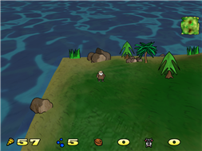
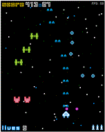
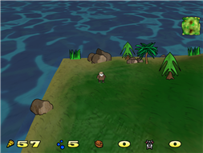
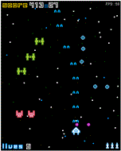
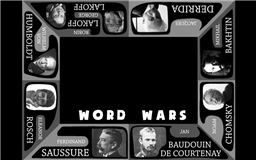
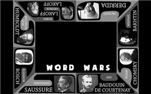

The Pop-Up Games Arcade
Time: Saturday, 2 November, 11 AM to 4 PM.
Place: behind the Bread and Butter Letter, 225 Karangahape Road.
How much: $5 cash at the door.
More people play games than ever before, but few Aucklanders know about the DIY game makers in their own city.
A small group aims to change this, by bringing local games to the local community in a fun and social way.
The Pop-Up Games Arcade is an event where everyone – including people who might not consider themselves to be "gamers" – can enjoy unique, New Zealand made games together.
The goal is to build a friendly community around local games, the same way that people get together to support local bands, painters, poets and zinesters.
The arcade features ten games made by local creatives. These games were chosen from hundreds made in Auckland because they show a wide range of styles, while still being easy to learn and fun in an arcade setting.
The arcade itself is made from old computers, up-cycled into art with paint, chalk, and googly eyes. It's messy, colourful and strange – just like the games.
All ages are welcome. A few of the games have mature themes.
The arcade happens on Saturday, 2nd of November, and costs $5 cash at the door.
More information: http://newnorthroad.com/arcade/
 





 
